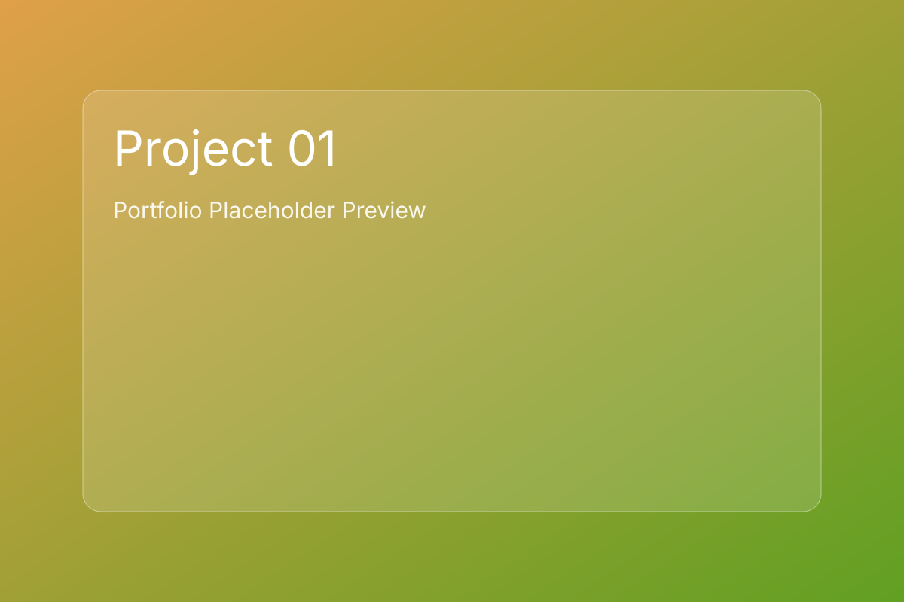

Nova Commerce
Premium storefront with resilient backend architecture.
Full-stack web developer
I design and build websites and platforms with clean frontends, robust APIs, and thoughtful systems that scale.
Selected Works
Expertise
Semantic interfaces, design systems, performance tuning, and accessible interactions.
API design, auth, data modeling, background jobs, and dependable integrations.
Containerized deployments, observability, CI/CD pipelines, and iterative release strategy.
Process
Business goals, users, and technical constraints.
Scope, architecture, and measurable success criteria.
Wireframes, UI system, and interaction specs.
Frontend and backend implementation with iterative QA.
Monitoring, performance tuning, and roadmap expansion.
About
I'm a full-stack developer focused on premium web experiences and pragmatic architecture. I collaborate closely with product teams to turn complex requirements into clean interfaces and reliable systems.
Stack: HTML, CSS, JavaScript, TypeScript, Node.js, Express, PostgreSQL, Redis, Docker, AWS.
Contact